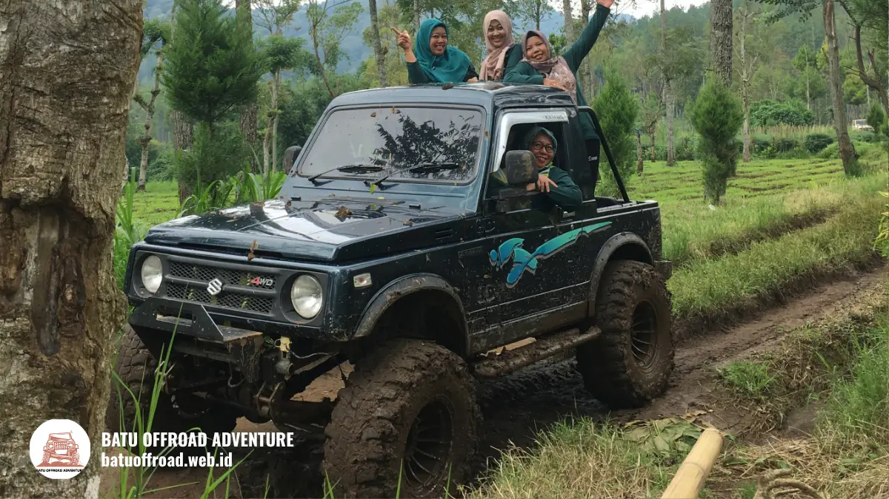

Apa Itu Wisata Offroad Batu dan Siapa yang Cocok Ikut
Wisata offroad adalah aktivitas rekreasi menggunakan kendaraan seperti jeep untuk menjelajah jalur tanah dan medan tidak rata dengan pemandu. Di Kota Batu, aktivitas ini dilakukan di kawasan pegunungan dekat Coban Talun, dengan kecepatan terkendali dan fokus pada pengalaman serta pemandangan.
- Wisata offroad adalah rekreasi menjelajah medan tidak rata dengan kendaraan dan pemandu.
- Berbeda dari offroad ekstrem, wisata offroad menekankan kenyamanan, keamanan, dan pemandangan.
- Peserta tidak perlu keahlian mengemudi karena pengemudi berpengalaman yang mengendalikan kendaraan.
- Peserta dengan kondisi kesehatan tertentu memerlukan pertimbangan ekstra.
- Konfirmasi batas usia dan ketentuan peserta ke operator sebelum memesan.
Apa Pengertian Wisata Offroad?
Wisata offroad adalah kegiatan rekreasi yang memakai kendaraan, umumnya jeep, untuk melewati jalur tanah, batu, atau tanjakan sambil menikmati alam dengan pendampingan pemandu.
Istilah "offroad" merujuk pada jalan di luar jalan raya beraspal. Dalam konteks wisata, jalur tersebut dipilih karena pemandangannya dan karakter medannya, bukan untuk menguji batas kendaraan. Pengemudi mengendalikan kecepatan dan memilih lintasan sesuai kondisi.
Wisata offroad memiliki beberapa ciri:
- Kendaraan berpenggerak dan berdaya tahan untuk medan tidak rata.
- Pemandu atau pengemudi yang mengenal jalur.
- Titik singgah untuk beristirahat dan berfoto.
- Briefing keselamatan sebelum berangkat.
- Durasi dan rute sesuai paket yang dipilih.
Kota Batu menjadi lokasi populer karena kontur pegunungannya. Paparan kinerja Pemkot Batu mencatat 10.737.865 kunjungan wisata pada 2024. Besarnya kunjungan itu mendorong banyak operator menyediakan aktivitas berbasis alam, termasuk jeep di sekitar Coban Talun.
Untuk siapa wisata offroad dirancang?
Wisata offroad dirancang untuk wisatawan umum yang ingin pengalaman petualangan ringan dan pemandangan alam tanpa memerlukan keahlian mengemudi di medan berat.
Peserta bertindak sebagai penumpang. Tugas utama mereka adalah mengikuti arahan, berpegangan, dan menjaga barang bawaan. Karena itu, aktivitas ini terbuka bagi pemula selama kondisi fisiknya memadai.
Apa Beda Wisata Offroad dengan Offroad Ekstrem?
Wisata offroad berbeda dari offroad ekstrem karena wisata menekankan kenyamanan, keamanan, dan pemandangan, sedangkan offroad ekstrem menekankan tantangan teknis dan batas kemampuan kendaraan.
Perbedaannya dapat dilihat dari beberapa aspek:
| Aspek | Wisata Offroad | Offroad Ekstrem |
|---|---|---|
| Tujuan | Rekreasi dan pemandangan | Tantangan teknis |
| Peserta | Wisatawan umum | Pegiat berpengalaman |
| Kecepatan | Terkendali | Bergantung medan dan kompetisi |
| Pengemudi | Pemandu berpengalaman | Peserta atau tim sendiri |
| Medan | Jalur wisata yang dikenal | Medan sulit yang dipilih khusus |
Wisata offroad di Batu umumnya mengikuti jalur yang sudah dikenal pemandu. Rute dapat disesuaikan operator saat kondisi tidak aman, misalnya saat hujan deras. Prioritas utamanya adalah keselamatan dan kenyamanan peserta.
Offroad ekstrem membutuhkan keterampilan, perlengkapan, dan persiapan khusus. Wisata offroad tidak dirancang untuk itu. Wisatawan yang mencari tantangan ekstrem perlu menanyakan secara jelas apa yang ditawarkan operator agar ekspektasi sesuai.
Siapa yang Cocok Mengikuti Wisata Offroad?
Wisata offroad cocok untuk keluarga, pasangan, teman, komunitas, dan rombongan kantor yang sehat, bersedia mengikuti arahan, dan menyukai suasana petualangan ringan.
Kelompok yang umumnya cocok:
- Pemula. Tidak perlu pengalaman offroad.
- Keluarga. Dengan paket jalur ringan dan pengawasan orang tua.
- Pasangan dan teman. Untuk perjalanan santai dan berfoto.
- Rombongan kantor dan komunitas. Sebagai kegiatan kebersamaan.
Syarat dasar bagi peserta adalah kesediaan mematuhi aturan keselamatan, seperti duduk sesuai arahan dan tidak berdiri saat jeep melaju. Kemampuan menahan guncangan ringan juga diperlukan karena jalur tanah tidak rata.
Perlengkapan yang membantu antara lain pakaian tertutup, sepatu bertali, jaket tipis, masker, dan pelindung ponsel. Dengan persiapan itu, hampir semua peserta sehat dapat menikmati perjalanan dengan nyaman.

offroad membawa penumpang wanita di jalur berlumpur.
Siapa yang Perlu Pertimbangan Ekstra Sebelum Ikut?
Peserta yang perlu pertimbangan ekstra sebelum ikut wisata offroad adalah ibu hamil, penderita masalah punggung atau leher, penderita penyakit jantung, anak kecil, dan lansia.
Guncangan di jalur tanah dapat memberi tekanan pada tubuh. Karena itu, kelompok berikut sebaiknya berkonsultasi dengan dokter dan menanyakan ketentuan peserta kepada operator:
- Ibu hamil.
- Peserta dengan masalah tulang belakang, leher, atau sendi.
- Peserta dengan riwayat penyakit jantung atau tekanan darah tinggi.
- Peserta yang mudah mabuk perjalanan.
- Anak kecil dan lansia.
Informasi ini bersifat umum dan bukan saran medis. Keputusan akhir sebaiknya mengikuti saran tenaga kesehatan. Operator dapat memiliki batasan usia dan kondisi peserta yang berbeda-beda, sehingga wajib ditanyakan sebelum pemesanan.
Bagi peserta yang tetap ingin ikut, pilih paket jalur ringan, beri tahu pemandu tentang kondisi Anda, dan segera sampaikan jika merasa tidak nyaman.
Untuk gambaran menyeluruh, baca panduan utama wisata offroad Batu.
Kesimpulan
Wisata offroad adalah rekreasi menjelajah medan tidak rata dengan jeep dan pemandu, bukan olahraga ekstrem. Aktivitas ini cocok bagi banyak kalangan sehat, tetapi sejumlah peserta perlu pertimbangan ekstra dan konsultasi dengan dokter.
FAQ
- Apakah wisata offroad sama dengan offroad ekstrem?
Tidak. Wisata offroad menekankan kenyamanan dan pemandangan dengan kecepatan terkendali, sedangkan offroad ekstrem menekankan tantangan teknis dan membutuhkan keterampilan khusus. - Apakah pemula boleh ikut wisata offroad?
Boleh. Pemula tidak perlu keahlian mengemudi karena pengemudi berpengalaman yang mengendalikan jeep. Peserta cukup mengikuti arahan keselamatan. - Apakah ibu hamil boleh ikut wisata offroad?
Ibu hamil sebaiknya berkonsultasi dengan dokter sebelum ikut karena guncangan di jalur tanah. Banyak operator juga memiliki batasan peserta. Informasi ini bersifat umum, bukan saran medis.
Artikel Terkait